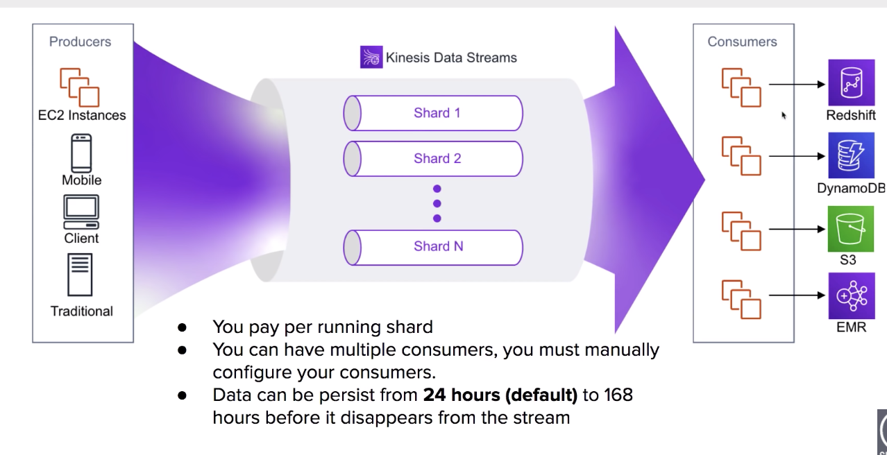
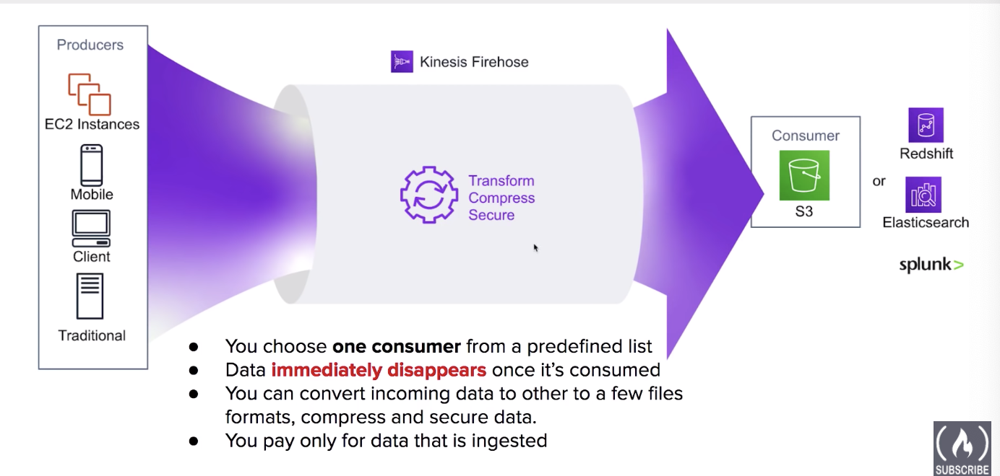
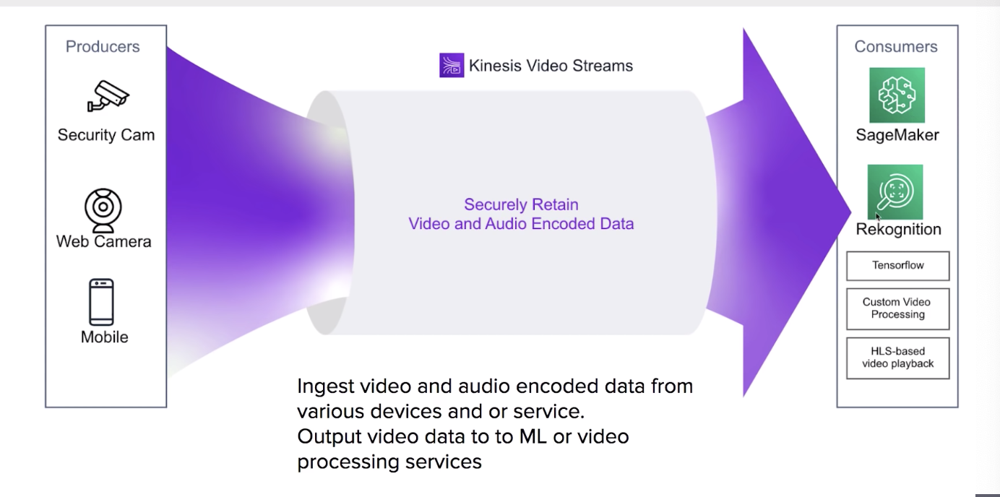
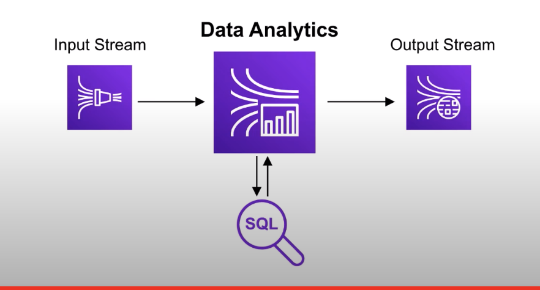
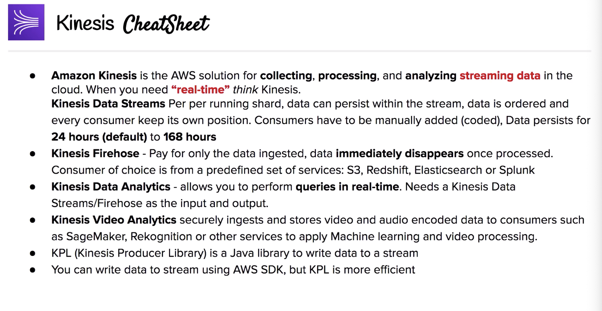

The current note and all other notes titled “AWS SAA Test prep” are based on the 10-hour free tutorial hosted by Andrew Brown and published by freeCodeCamp, which is accessible on YouTube through this link. Special thanks for the maker and publisher of the awesome video!
When you need real-time, think Kinesis.
Amazon Kinesis is the AWS fully managed solution for collecting, processing and analysing streaming data in the cloud.
Amazon Kinesis enables you to process and analyze data as it arrives and respond instantly instead of having to wait until all your data is collected before the processing can begin.
Streaming data examples:
- Stock prices
- Game data
- GeoSpatial data
- Click Stream Data
- Social Network Data
Kinesis Capabilities:
- Kinesis Data Streams
- Kinesis Firehose Delivery Streams
- Kinesis Data Analytics
- Kinesis Video Analytics
Kinesis Data Streams
You have data Producers and Consumers.
- You pay for each running shard.
- Incoming data is distributed among shards.
- You can have multiple consumers. You must manually configure your consumers.
- Data can persist from 24 hours (default) to 168 hours before it disappears from the stream.

Kineses Firehose Delivery Streams
- You choose one consumer from a predefined list:
- S3
- Redshift
- Elastisearch
- Splunk
- Data immediately disappears once its consumed.
- You can Transform, Compress and Secure data.
- You pay only for data that is consumed: cheaper
If you don’t need data retention, very good choice.

Kinesis Video Streams
For ingesting video/audio encoded data.
Stream video data for ML, analytics and other processing.

Kinesis Data Analytics
You can specific Firehose or Data Stream as input/output stream. Data that pass through Data Analysis run through custom SQL you provide, get the result and then output.
This allows for real-time analytics of your data.

Can get a bit expensive because you need Two Streams for input and output.
